内容要点
一支 43 分钟的人像美姿深度教学。吴老师把「引导模特摆姿」拆成一套可复制的底层逻辑：站姿（自下而上的原则、画圈圈六点位脚法、固定手/功能手、双手美姿）、坐姿（135° 脚角 + 前后脚错开漏半鞋）、蹲姿（避免正面蹲、平行蹲/后方重心腿蹲/前方腿重心蹲三种蹲法）、靠姿（只允许一个部位靠：手/肩/臀/脚）、道具（不要急慢慢来，墨镜背包由下往上）。
贯穿全片的一句话：「美姿小变化，机位构图大变化」——模特只要做细微调整，摄影师通过横竖构图、高低机位、正侧面和远近景别把画面做丰富。
引导从脚开始：自下而上，先站好站稳再做手部头部动作；站姿拆成脚、手、头三个关键部分。
确定一个重心脚，另一只脚围绕它画圈圈，六个点位形成六种经典脚法。
固定手（135° 垂放不动）+ 功能手（自上而下各种抓），配合机位构图大变化。
双手抱胸八字起式、双手插腰错开高低手，再演化为固定手/功能手的变化。
两个确定：脚 135°（太直太弯都显腿短腿粗）+ 前后脚错开、后方脚漏半鞋（前方脚伸长线条流畅）。
避免正面蹲，45° 侧方位；三种蹲法：平行蹲、后方重心腿蹲、前方腿重心蹲；手法通用 + 看天看地看镜头。
核心：只允许身体一个部位靠（手/肩/臀/脚），人跟靠的物体远一点点。
不要急慢慢来：墨镜垂下→腹部→锁骨→嘴→眼睛→头顶；背包同理，配合角度构图变化。
美姿引导的底层逻辑：① 自下而上，先站稳；② 确定重心脚，另一脚画圈圈；③ 固定手不动、功能手各种抓；④ 美姿小变化、机位构图大变化；⑤ 坐姿定 135°、靠姿只靠一个部位、道具慢慢来。
一站姿篇
站姿的引导，吴老师先给出一套总纲：一个原则 + 三个关键点。记下来，这就是拍好站姿的关键。
一个原则：自下而上
很多同学模仿网图直接让模特「插一下腰、扭一下胯、头倒一下、屁股提一点」，最后才提脚——结果模特站不稳，还会被怪「不会摆 pose」。
先让模特站好站稳（脚），再做手部动作，最后做头部动作。跳跃性、奔跑性的除外。
站姿因此拆成三个关键部分，分开练习就能轻松掌握：① 脚部调整（脚法） ② 手部调整（手法） ③ 头部。
脚法：十秒钟六个经典脚法（画圈圈原则）
模特不会摆 pose 时，不要否定她，而是告诉她：确定一个重心脚，另一只脚围绕重心脚「画圈圈」。只要在画圈圈的时候注意六个点位，就能得到六种经典脚法。
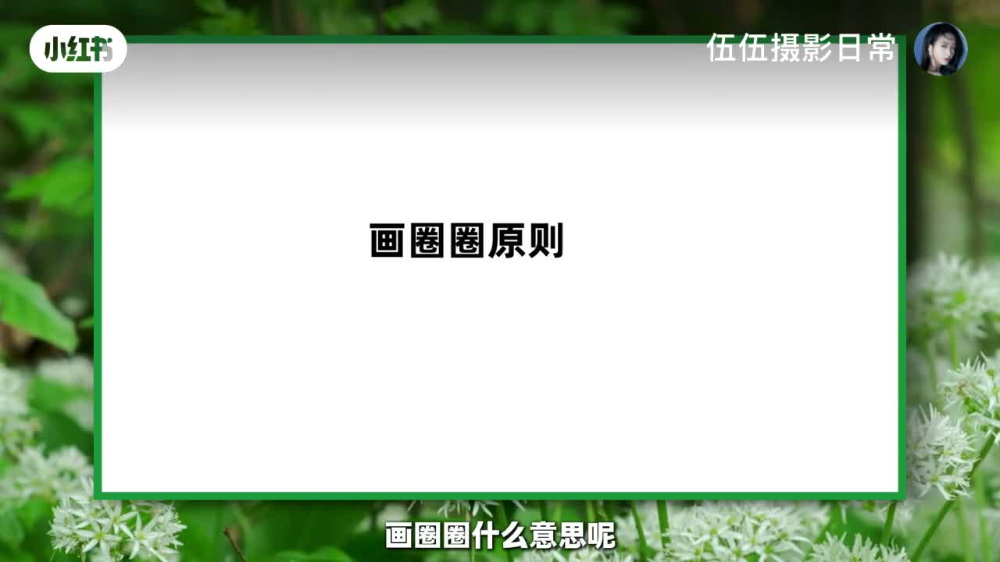
| 点位 | 动作 | 气质关键词 |
|---|---|---|
| 点位一 | 右脚放正前方一点点，脚尖稍微斜一点 | 经典脚法一 |
| 点位二 | 裸到侧方一点点，膝盖微微打开、抬起来一点 | 洒脱 |
| 点位三 | 把脚往回收，收到左脚脚后跟位置，膝盖并拢 | 内敛优雅（最常见） |
| 点位四 | 把脚藏在脚后跟位置，膝盖微微打开 | 三角形稳定构图、有结构感 |
| 点位五 | 脚往回再收一点点，抬起来一下 | 洒脱飘逸 |
| 点位六 | 把脚从后面绕回来，放在前面 | 达克宁广告经典美姿 |
画圈圈可以引导模特按前面 → 侧面 → 正侧 → 后方 → 后侧 → 前侧的顺序移动，配合现场照片就能轻松上手。
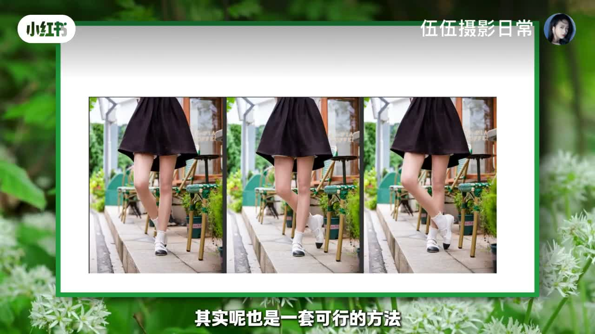
拍几张后让她「自动换一下点位二、点位三」。做对就夸，做错就提醒后再鼓励——她会慢慢放开，觉得「我的摄影师跟别人不一样」。
手法：单手美姿（固定手 + 功能手）
网上流传的「眼睛疼、鼻子疼、嘴巴疼、下巴疼」各种疼、各种抓，都有用，但可以更有逻辑地架构美姿框架。
不引导时，女生会两手自然垂下或抓在一起，都不是特别好。要分成两个手：一个固定手（保持不变）+ 一个功能手（去各种抓）。
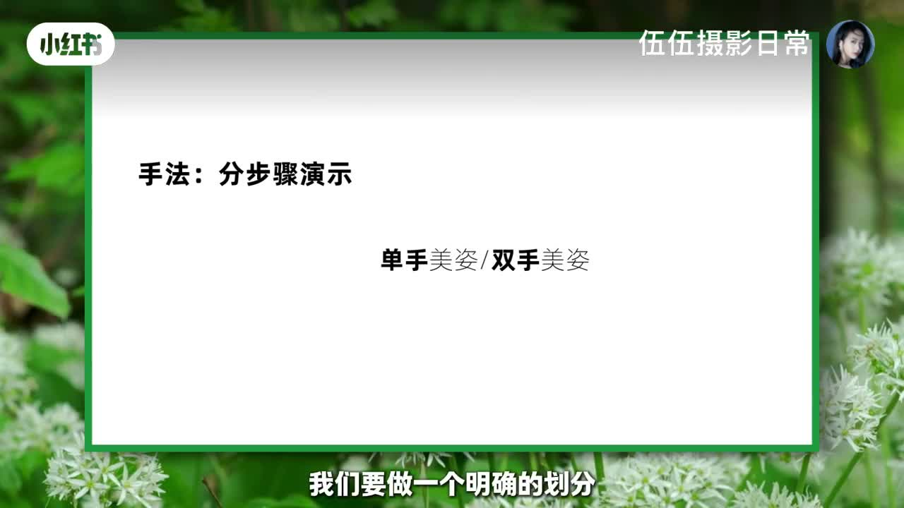
固定手标准姿态：手微微弯曲大概 135° 垂下来，手背微微转侧，手臂不要夹太紧、微微打开——手线条更好，避免呆板。后续所有动作中，这个手保持不变。
功能手：自上而下各种抓，按顺序引导：
- 挡太阳——有花抓花、没花抓草、实在不行挡太阳（由高的地方抓起）
- 抓头发 → 揉眼睛 → 揉鼻子 → 咬嘴巴 → 放下巴 → 放胸口 → 两手交叉
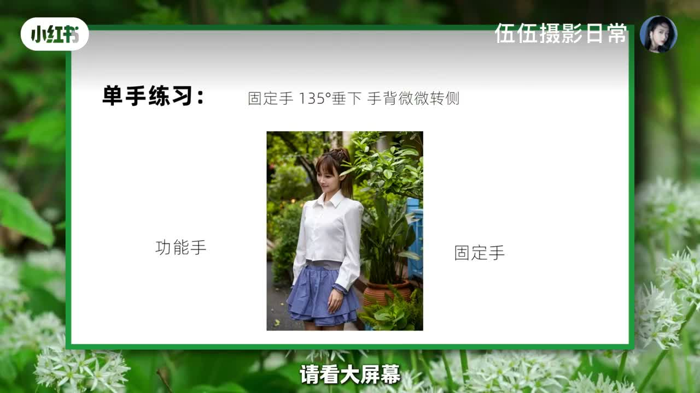
「美姿小变化，机位构图大变化」——不要一张照片一个大变、考验素人模特，而是让模特做小小变化，摄影师去改变构图、机位、景别，让画面更丰富。
摄影师的变化清单：横竖构图交替（抓空气竖构图→摸头发横构图→揉鼻子横构图→放胸口竖构图…）、高低机位（特写稍高机位、全身稍低机位）、远近距离、模特的正面和侧面。
双手美姿：标准起式 + 关联变化
先确定几个双手美姿的标准起式，不要「大动干戈」拉着手机找图片给模特看。依然遵循美姿小变化原则。
起式一：双手抱胸——两个手呈一个八字抱在胸口，手腕压一下，手背稍微转侧，就是基本美姿；脚法用点位移动脚法即可。
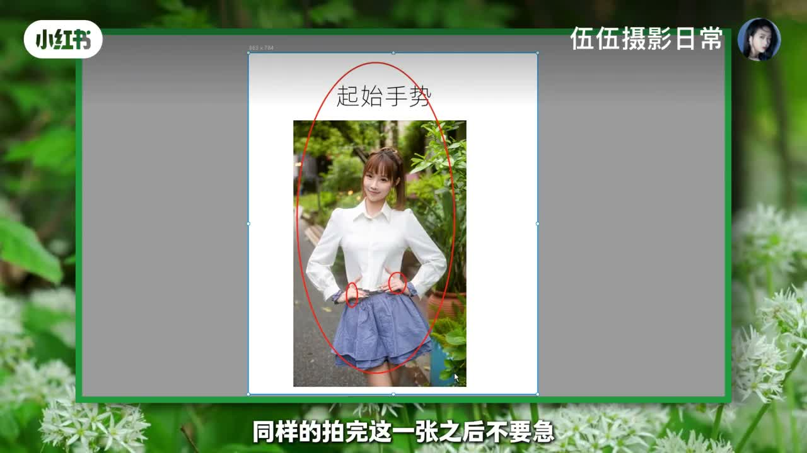
拍完起式后：确定一个手为固定手保持不变，另一只手为功能手——抓头发、揉眼睛、揉鼻子、放嘴巴、放下巴，这就是「关联变化」。
起式二：双手插腰——重点是一个手高一点点、一个手低一点点错开，两个手一样高就像吵架；错开高低手后头微微倒一下就是美姿。拍完同样进入固定手/功能手的变化（抓头发、揉下巴、摸耳朵）。
模特小小的变化，你大大的变化（横竖构图、高低机位、正面侧面），光线、构图、情绪就都出来了。
二坐姿篇
坐姿的底层逻辑：两个确定。
确定一：脚的角度 = 135°
侧坐时如果不会引导，模特为防走光会把两脚伸得很直（像竹竿）或弯得很厉害（肉挤成一坨），两种都显腿短腿粗。正确做法：引导模特坐下时，把脚大概调整到 135°，刚刚好。
确定二：视觉美学 = 前后脚错开 + 漏半鞋
两脚并得太拢的 135° 也不好。要前后脚错开：靠近镜头的是前方脚，远离镜头的是后方脚。把后方脚往回收，收到漏半个鞋子出来——这是干货。
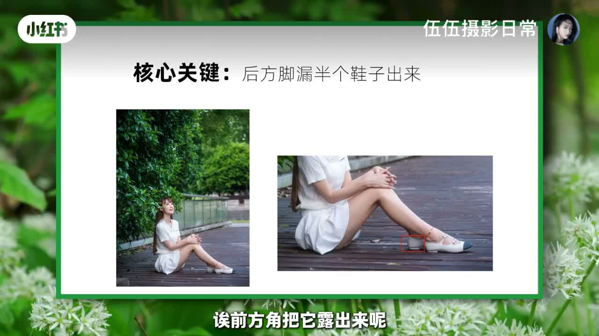
- 为什么漏后方脚、而不是前方脚？ 前方脚漏出来画面会有两个鞋子，且前方脚往回收会显腿短；让镜头前面的脚往前伸、线条第一感觉更长。
- 为什么只漏半个鞋子？ 收得太多就是完整两个鞋子，显得累赘冗余；半个鞋既保留前方脚流畅性，又避免两个鞋同时出现的冗余感。
拍情绪片时这些小细节可以放掉，但「先立规矩」——一板一眼学好，之后张弛有度地放，才是你的拿捏尺度。
坐姿手法：和站姿完全一样
脚法做好后，手法跟站姿里面的手法相同：先做一个起式（两手自然垂下、手指交叉、抬头看天），拍完不要大动，确定固定手与功能手。
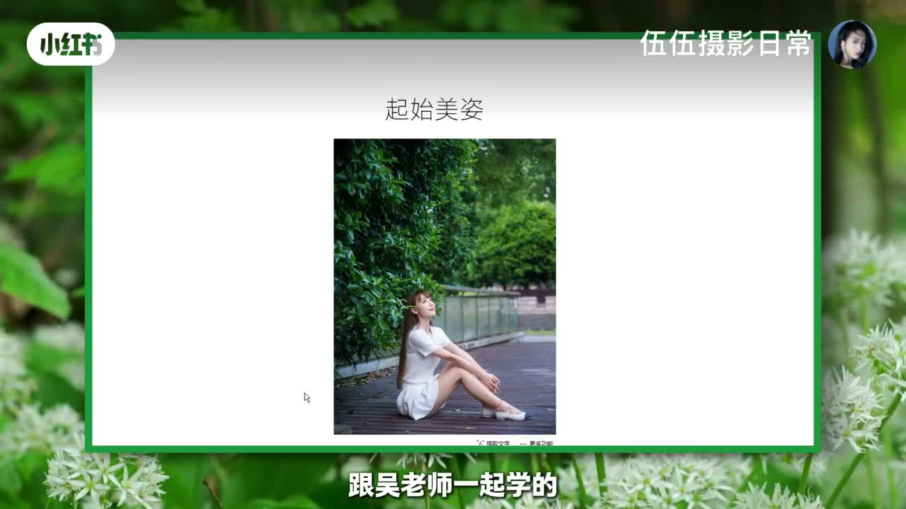
坐姿前方手（左手）作固定手自然垂下，后方手作功能手由上往下抓：有花抓花、没花抓草、挡太阳、抓头发、抓下巴，再往下抓大臂、抓小臂、两手高低搭——一个手抓下来就拍了三张美姿。
坐姿侧坐：一确定脚法（135°、一脚前一脚后），二确定手法（固定手 + 功能手），配合高低机位、远近景别、正侧面角度实现美姿细微变化。
三蹲姿篇
蹲姿用好了有松弛感，没用好就拍出「熊猫蹲」或「上厕所」的感觉。
基本逻辑：避免正面蹲，45° 侧方位
正面蹲容易显得头大、臃肿、呆板（偶尔拍萌萌哒、撒娇可以来几张）。大部分情况调整为45° 侧方位——身体转侧一点点，腿部线条、手部线条、脸部侧面都会更好看，脸型更好，你就成功了一小半。
三种蹲法
蹲法一：平行蹲——两脚并拢直接蹲下去。
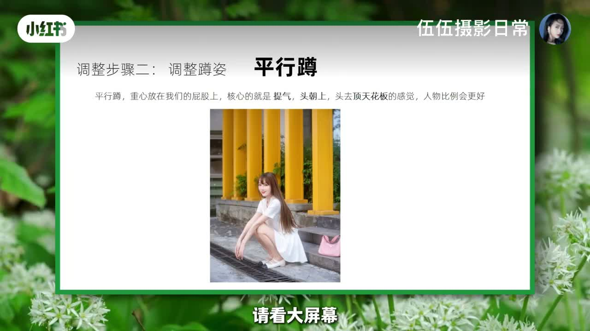
- 脚法：两脚并拢，直接蹲下。
- 核心关键：提气、头朝上——想象头去撞天花板、头顶天花板的感觉，避免驼背弯腰，身形比例更好。
- 手法：先两手并拢交叉或垂下，然后前方手为固定手不变，后方手各种抓：抓嘴巴、摸头发、抓后面的头发、抓大臂、抓小臂。
蹲法二：后方重心腿蹲——一个脚高一个脚低，后方腿蹲地支撑身体。
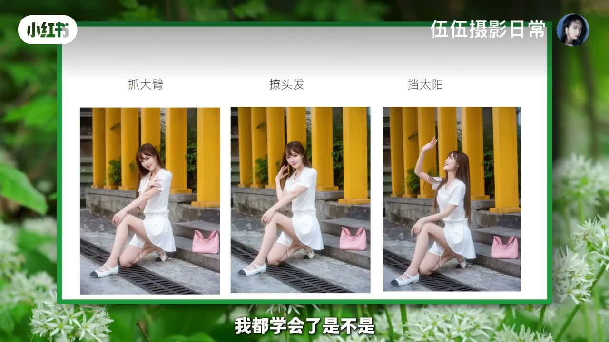
- 脚法：后方腿直接蹲地作为重心；前方腿尽量往前伸（大概 110°），腿部线条更修长，前方形成三角区域更稳健好看。关键点：前方腿要往前伸，不要勾着里面，勾着显腿短。
- 手法：两手合拢放一起也可；再一个手固定、一个手功能：抓大臂、撩头发、挡太阳。
蹲法三：前方腿重心蹲——前方脚着地，重点调整后方腿。
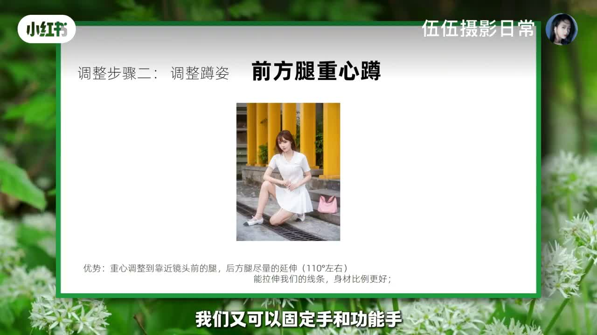
- 脚法：前方腿着地后，后方腿不要弯得特别厉害，把脚往前伸一点点（约 110°）——熟悉的配方前后对调，线条就流畅。
- 手法：一个手顺势搭着，另一个手反手插腰、抓小臂、撑下巴。
通用手法：画圈圈抓（站坐蹲躺趴靠都适用）
无论站姿坐姿蹲姿躺姿趴姿靠姿，手法是通用型的：确定一个固定手 + 一个功能手，功能手各种抓，可以画圈圈抓、由上往下抓。
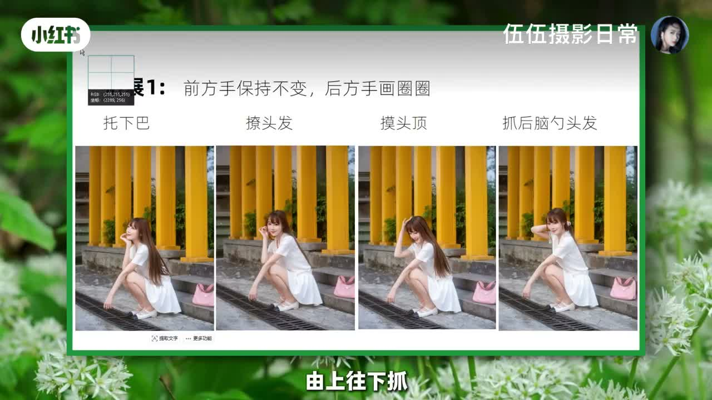
固定手全程不变，功能手依次：脱下巴 → 撩头发 → 摸头顶 → 撩后脑勺头发（画一个圈圈过去）→ 摸肩膀 → 摸大臂 → 摸小臂 → 双手高低搭，变化非常多。
附加小技巧：头部三变化
不要张张看镜头：抬头看天拍几张 → 低头看地拍几张 → 偏头（头歪一下、倒头偏头）看镜头。站姿坐姿都适用，画面更丰富。
四靠姿篇
只允许身体一个部位去靠（墙 / 电线杆），不要多处靠。
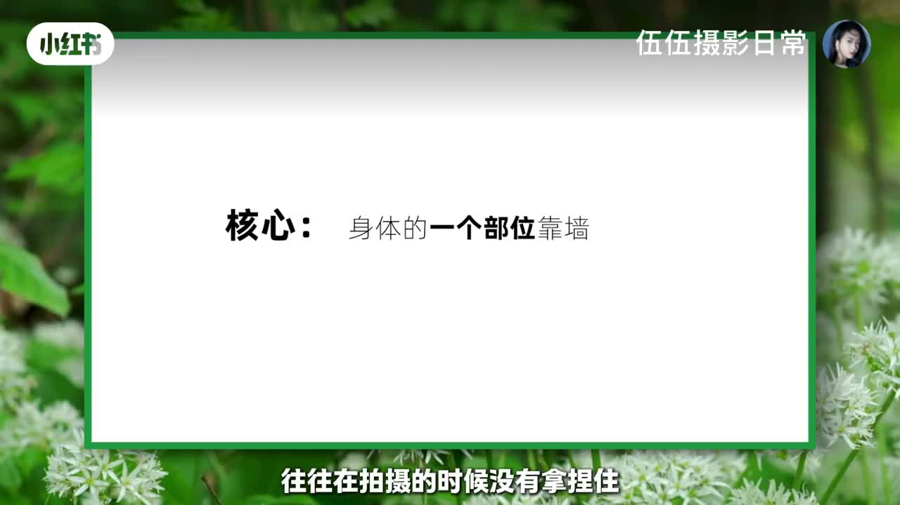
错误示范：头靠墙 + 肩靠墙 + 手贴墙（三个部位靠），人身体像电线杆，没有曲线和流畅性。记住：只让身体的一个部位去靠。通常分四种：
① 手去靠墙——反手搭靠墙，或把手直接支撑搭在墙上。
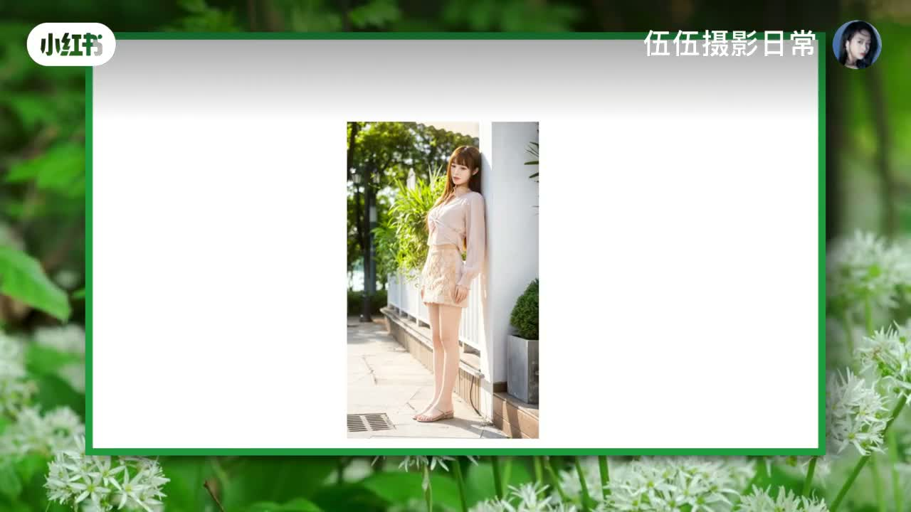
- 温馨提示：人跟靠的物体隔远一点点，更好引导美姿。
- 脚法：用六脚法里的点位一。
- 手法：两手抓在一起，或一个固定手 + 一个功能手：撩头发、放下巴、搭头顶挡太阳、拉眼镜、拿帽子。
② 肩膀靠墙——身体与物体远一点，侧面用肩膀靠。
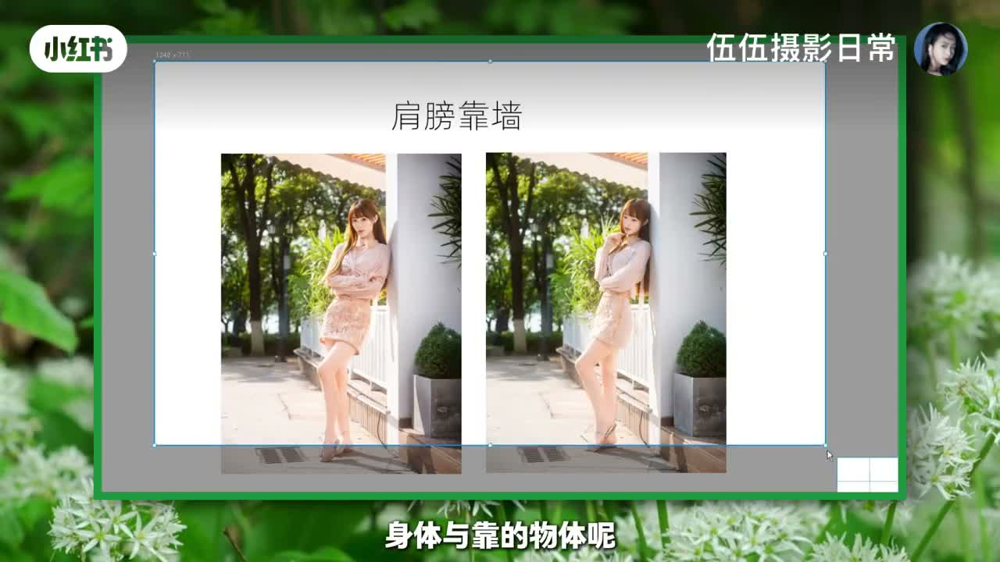
- 肩膀靠了之后头尽量不要靠，更不要头跟臀部一起靠。
- 脚法：仍用点位一，侧面版点位一。
- 手法：双手抱胸起式，再确定固定手/功能手抓头发、揉眼睛、挡太阳；一手上、一手抱肚子等。
③ 臀部靠墙——身体尽量的分开一点点，上半身往前压一点点，线条感更好。
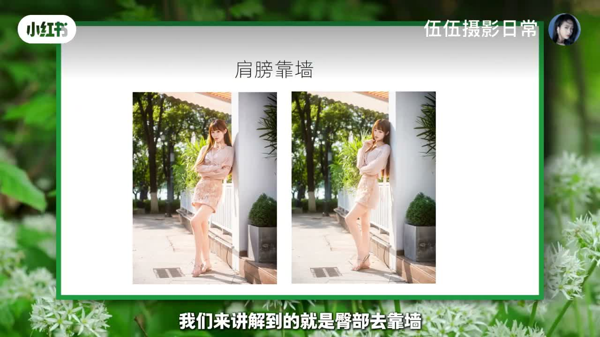
- 手法：一个手抱着手臂位置，后方手为功能手摸头发、放嘴巴。
- 脚法：可以踮起来，或六脚法里任意一个。
- 配合高低构图、横竖构图、正侧面变化。
④ 脚去靠墙（单脚靠墙）——特别适合洒脱一点的拍法。
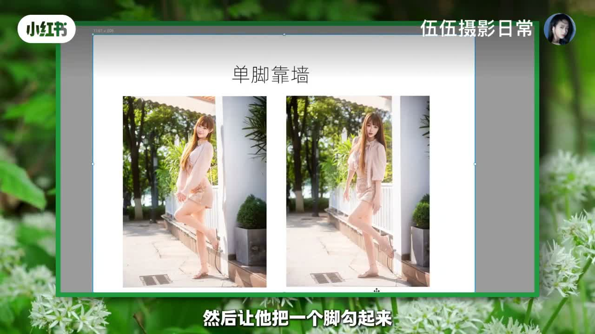
- 人跟墙远一点点，把一个脚勾起来靠在墙上。
- 手法：两手抱在一起，或一个手去抓。
- 可以拍背面、侧面、回头的单脚靠墙，非常好看。
① 只允许身体一个部位靠：手 / 肩 / 臀 / 脚；② 人跟靠的物体远一点点，不要挨太近，更好舒展开做美姿。
五道具篇
新手阶段不会摆美姿，常准备道具让模特拉着，缓解尴尬；也可以在场景里随机选匹配元素做道具。
不要急，慢慢来。拿到道具不要马上戴上去「咔嚓咔嚓」拍两张就没得拍了。
墨镜：由下往上慢慢来
拉着墨镜时不要急着戴，由下往上一步步放：
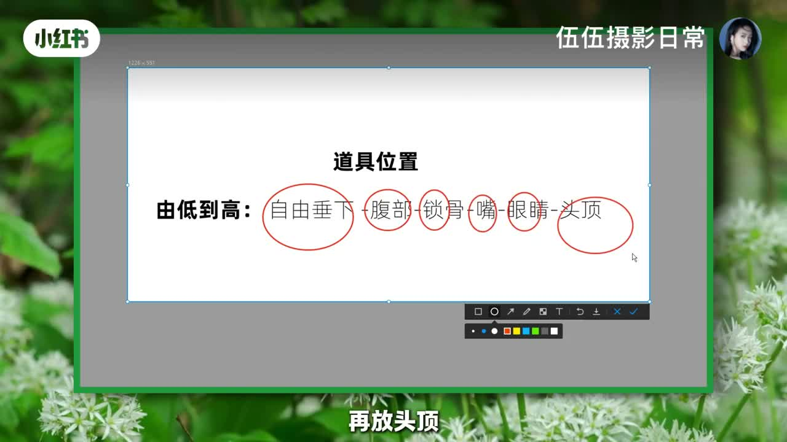
- 手拉墨镜自然垂下去（放这个位置）
- 慢慢拉高一点点，放腹部
- 再放锁骨
- 再放嘴巴
- 再放眼睛
- 最后戴在头顶
这样一个道具就能拍出一整套连贯的美姿，而不是一戴一拍就结束。
背包：同样的逻辑
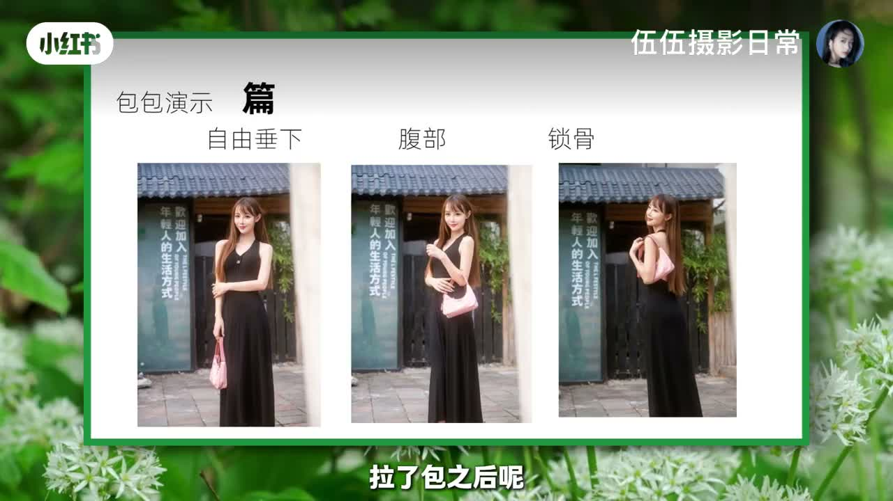
拉了包之后：先自然垂下去拍一下 → 放上一点位置 → 放腹部 → 放侧面 → 放肩部，画面就丰富起来。
摄影师的变化空间
记住「美姿小变化、机位构图大变化」：同一个美姿下，摄影师可以找不同角度——正面拍完拍侧面、侧面拍完拍背面；让模特转侧一点拍偏背影、手搭下来墨镜放下抬头往上看；再改变高低机位、横竖构图，画面就灵动丰富。
没有花里胡哨的高审美要求，只是接地气地讲清逻辑和核心要点，再拍给你看。把这套当作你的底层逻辑和下限，理解后再教模特，有了基本功再去尝试松弛感、生命力的照片。